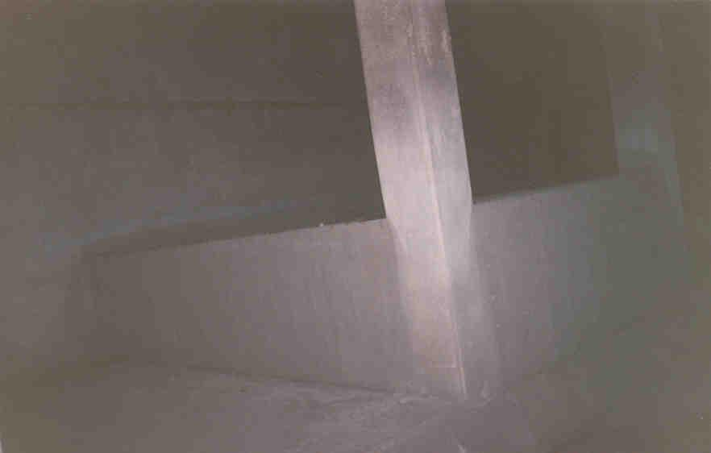

A tour of the storm drain under Third Avenue in Columbus, on the east bank of the Olentangy River. It is easily accessible by walking down the bank.
First you enter the round concrete portion which goes for a while, then ends in a flat-bottomed hallway with two separated walkways.
The one on the left goes up to the next section: another round pipe, this one very long. By the time you're through this part you're wondering if it's ever going to end, and the proverbial light at the end of the tunnel is just a dot behind you.
This section curves right, putting you into complete blackness, and then you emerge in the chamber. It's a weird room, with concrete platforms that look something like horse stalls but are actually places where you can look down at the rushing river of nasty sewage runoff. I don't think this is hard core sewage--shit and stuff like that--but it isn't pleasant. Just ask Rookie, of Illicit Ohio, who tried to walk on the edge down there and slipped and almost fell in.

There is a ladder set into the back wall that is climbable, if you don't mind standing on top of one of the guardwalls and staring at that river of brown water. Next to the ladder is the rusty metal door which descends when necessary so the sewage can overflow and run out the pipe into the river.
At the top of the ladder is the area with all the machinery which controls the opening and closing of the gate: a big screw thing with a wheel, locked up tight.
Leading up from this area is a stairwell which ends in a locked metal plate. When they need to do it, I guess the sanitation workers just unlock the grate and come down the steps. They're just not very adventurous.
An interesting drain, although it would be cooler if it connected with something.
Back
forgottenohio@yahoo.com